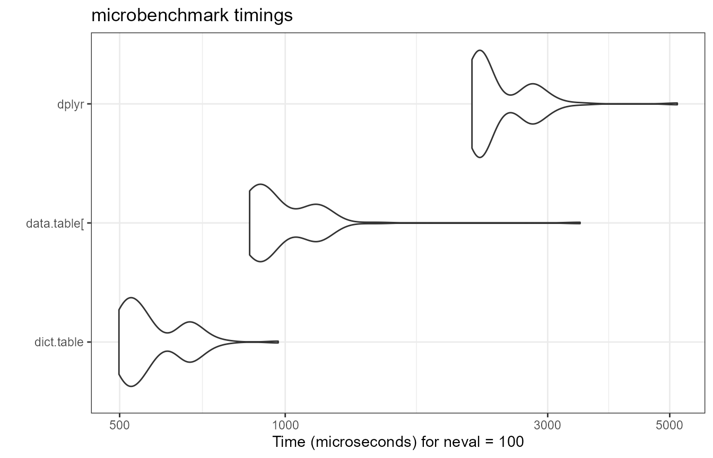
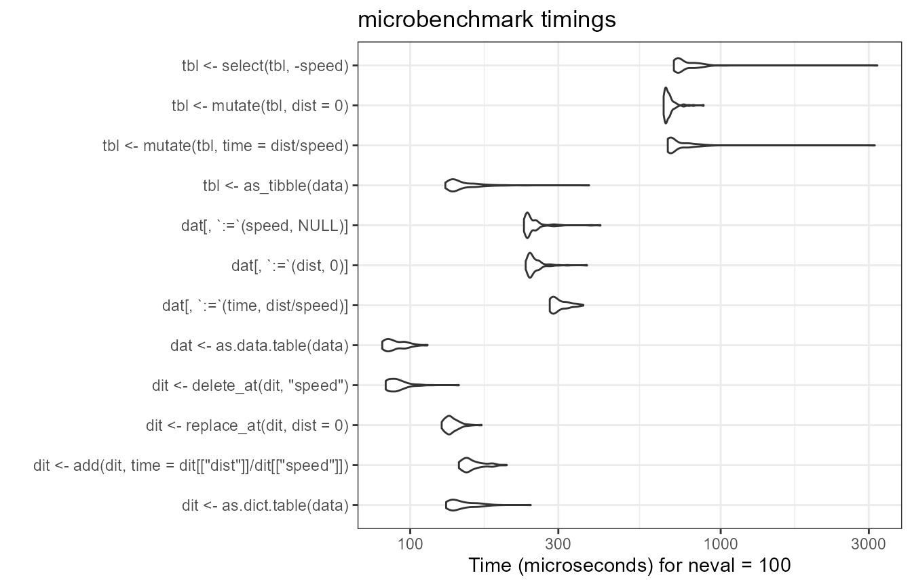
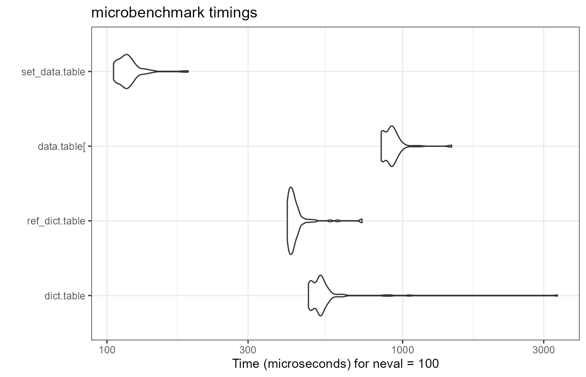

Manage data columns with dict.table
Source:vignettes/v04-manage-data-columns.Rmd
v04-manage-data-columns.RmdMotivation
The dplyr
functions select and mutate are widely used to
manage data data.frame (or tibble) columns.
They cover a wide range of use cases and are applied in quick data
exploration as well as in data analysis pipelines. On the other hand,
when implementing critical code or building R packages, developers may
revert to base R to minimize errors and code dependencies. At least,
both mutate and select may require additional
checking, for example, to catch column name clashes.
The container
package in parts was developed to close this gap. With version 1.0.0, it
provides dict.table, which can be considered a data.table with
an extended set of functions to add, extract, remove and replace data
columns with minimal required additional checking, hopefully resulting
in lean and robust code.
This vignette compares basic dplyr and
dict.table data column operations and at the end shows that
both frameworks can be easily combined.
Column operations
To keep matters simple, we use a tiny data set.
library(container)
library(dplyr)
data <- dict.table(x = c(0.2, 0.5), y = letters[1:2])
data
# <dict.table> with 2 rows and 2 columns
# x y
# <num> <char>
# 1: 0.2 a
# 2: 0.5 bAdd
Let’s add columns using mutate.
data %>%
mutate(ID = 1:2, z = 1)
# <dict.table> with 2 rows and 4 columns
# x y ID z
# <num> <char> <int> <num>
# 1: 0.2 a 1 1
# 2: 0.5 b 2 1For someone not familar with the tidyverse, this code block might read
somewhat odd as the column is added and not mutated. To add a
column via dict.table use add.
data %>%
add(ID = 1:2, z = 1)
# <dict.table> with 2 rows and 4 columns
# x y ID z
# <num> <char> <int> <num>
# 1: 0.2 a 1 1
# 2: 0.5 b 2 1The intend to add a column thus is stated more clearly.
Next, instead of ID, let’s add another numeric column y,
which happens to “name-clash” with the already existing column.
data %>%
mutate(y = 1)
# <dict.table> with 2 rows and 2 columns
# x y
# <num> <num>
# 1: 0.2 1
# 2: 0.5 1Of course, the initial y-column has been overwritten. While this was easy to see here, it may not if the data has a lot of columns or if column names are created dynamically during runtime. To catch this, usually some overhead is required.
if ("y" %in% colnames(data)) {
stop("column y already exists")
} else {
data %>%
mutate(y = 1)
}
# Error: column y already existsLet’s see the dict.table-operation in comparison.
The name clash is caught by default and therefore requires no additional checking.
Modify
If the intend was indeed to overwrite the value, the
dict.table function replace_at can be
used.
data %>%
replace_at(y = 1)
# <dict.table> with 2 rows and 2 columns
# x y
# <num> <char>
# 1: 0.2 1
# 2: 0.5 1
# or programmatically
data %>%
replace_at("y", 1)
# <dict.table> with 2 rows and 2 columns
# x y
# <num> <char>
# 1: 0.2 1
# 2: 0.5 1As we saw above, if a column does not exist, mutate
silently creates it for you. If this is not what you want, which means,
you want to make sure something is overwritten, again, a workaround is
needed.
if ("ID" %in% colnames(data)) {
data %>%
mutate(ID = 1:2)
} else {
stop("column ID not in data.frame")
}
# Error: column ID not in data.frameOnce again, the workaround is already “built-in” in the
dict.table-framework,
data %>%
replace_at(ID = 1:2)
# Error: column(s) not found: 'ID'that is, replace_at expects the column to exist.
If we were to paraphrase the intend of the mutate
function, it probably would be something like “Replace a column or,
if it does not exist, add it.”. As you may already have guessed,
this can also be expressed within the
dict.table-framework.
data %>%
replace_at(ID = 1:2, .add = TRUE)
# <dict.table> with 2 rows and 3 columns
# x y ID
# <num> <char> <int>
# 1: 0.2 a 1
# 2: 0.5 b 2Remove
A common tidyverse approach to
remove a column is based on the select function. One
corresponding dict.table-function is
delete.
data %>%
select(-"y")
# <dict.table> with 2 rows and 1 column
# x
# <num>
# 1: 0.2
# 2: 0.5
data %>%
delete_at("y")
# <dict.table> with 2 rows and 1 column
# x
# <num>
# 1: 0.2
# 2: 0.5Let’s see what happens if the column does not exist in the first place.
data %>%
select(-"ID")
# Error in `select()`:
# ! Can't select columns that don't exist.
# ✖ Column `ID` doesn't exist.
data %>%
delete_at("ID")
# Error: column(s) not found: 'ID'So in this case, both frameworks will complain. Now assume we want the column to be removed if it exist but otherwise silently ignore the command, for example:
The dict.table provides a straight-forward solution via
the discard function:
data %>%
discard_at("ID")
# <dict.table> with 2 rows and 2 columns
# x y
# <num> <char>
# 1: 0.2 a
# 2: 0.5 bBenchmark
To compare the performance of both frameworks, we benchmark some column operations using the standard ‘cars’ data set. As a hallmark reference we use data.table.
library(microbenchmark)
library(ggplot2)
library(data.table)
library(tibble)
data = cars
head(cars)
# speed dist
# 1 4 2
# 2 4 10
# 3 7 4
# 4 7 22
# 5 8 16
# 6 9 10For the benchmark, we add, replace and finally delete a column.
bm <- microbenchmark(control = list(order="inorder"), times = 100,
dict.table =
as.dict.table(data) %>%
add(time = .[["dist"]] / .[["speed"]]) %>%
replace_at(dist = 0) %>%
delete_at("speed"),
`data.table[` =
as.data.table(data)[
][, time := dist / speed
][, dist := 0
][, speed := NULL],
dplyr =
as_tibble(data) %>%
mutate(time = dist / speed) %>%
mutate(dist = 0) %>%
select(-speed)
)
autoplot(bm) + theme_bw()
While dict.table and data.table performed
nearly the same there is some distance to dplyr (about 3x).
Let’s examine each operation in more detail.
data = cars
bm <- microbenchmark(control = list(order="inorder"), times = 100,
dit <- as.dict.table(data),
dit <- add(dit, time = dit[["dist"]] / dit[["speed"]]),
dit <- replace_at(dit, dist = 0),
dit <- delete_at(dit, "speed"),
dat <- as.data.table(data),
dat[, time := dist / speed],
dat[, dist := 0],
dat[, speed := NULL],
tbl <- as_tibble(data),
tbl <- mutate(tbl, time = dist / speed),
tbl <- mutate(tbl, dist = 0),
tbl <- select(tbl, -speed)
)
autoplot(bm) + theme_bw()
Apparently, the mutate and select operations are the slowest in comparison, which for the most part should be a result of these functions providing non-standard evaluation (NSE) and generally a wide range of ways to specify the desired operation. Unsurprisingly such flexibility comes at a cost.
Since the data.table
expressions also involve NSE terms and some overhead, in this benchmark
the dict.table performs even best. Having said that, of
course, the data.table code
can be further improved by avoiding the overhead and instead use
reference semantics via the data.table built-in
set function.
data = cars
bm <- microbenchmark(control = list(order="inorder"), times = 100,
dict.table =
as.dict.table(data) %>%
add(time = dit[["dist"]] / dit[["speed"]]) %>%
replace_at(dist = 0) %>%
delete_at("speed"),
ref_dict.table =
as.dict.table(data) %>%
ref_add(time = .[["dist"]] / .[["speed"]]) %>%
ref_replace_at(dist = 0) %>%
ref_delete_at("speed"),
`data.table[` =
as.data.table(data)[
][, time := dist / speed
][, dist := 0
][, speed := NULL],
set_data.table =
as.data.table(data) %>%
set(j = "ID", value = .[["dist"]] / .[["speed"]]) %>%
set(j = "dist", value = 0) %>%
set(j = "speed", value = NULL)
)
autoplot(bm) + theme_bw()
This puts things back into perspective. We also provided a
dict.table version using reference semantic, which is also
built-in and results in a slight speed improvement over the
standard version. As a result, data.table remains the way
to go when speed is key.
Combine dplyr and dict.table
Since a dict.table is fully compatible with
dplyr and data.table, all of the presented
frameworks can be easily combined in any order.
Summary
In critical code, it is usually of high priority to avoid unintended
data column operations. For this, usually additional code is required to
check for the existence or absence of columns. The
dict.table framework provides a set of column operations
with built-in checking, thereby yielding safer and leaner code out of
the box and ultimately freeing the developer from writing some annoying
checks over and over again.